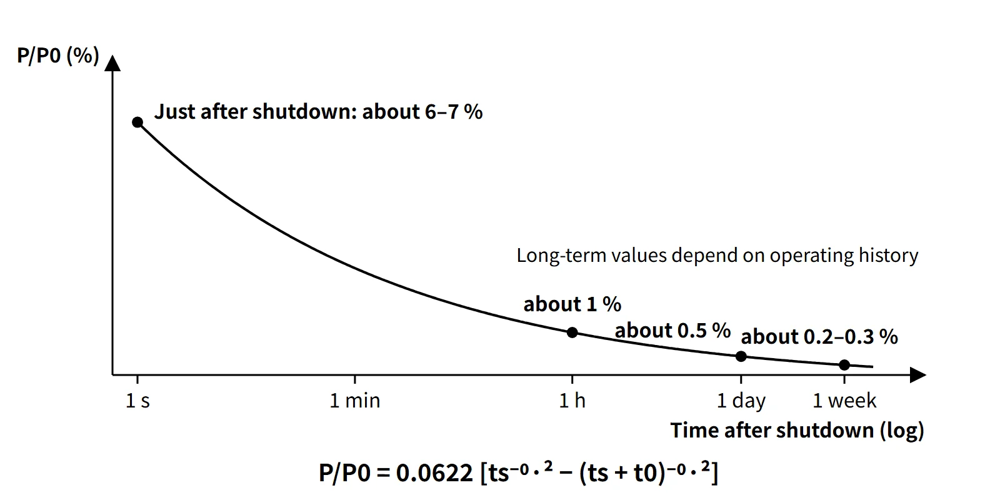

Thermal Hydraulics & Thermodynamics · C-TH-004
Decay Heat — The Fission-Product Heat That Does Not Switch Off at Shutdown
About 6–7 % of rated power at shutdown, about 1 % after an hour and 0.5 % after a day — heat that control rods cannot switch off.
Decay heat is the heat that the fission products and actinides (²³⁹U, ²³⁹Np) accumulated in the core keep releasing through β and γ decay after the reactor is shut down and the fission chain reaction has stopped. It starts at about 6–7 % of rated thermal power just after shutdown and falls slowly to about 1 % after one hour and about 0.5 % after one day.
Because control rods cannot switch it off, it is the reason why core cooling after shutdown (residual heat removal) is a fundamental safety function.
Principle and mechanism
Where the heat comes from — binding energy and decay heat
The roughly 200 MeV released per fission comes from the difference in binding energy per nucleon between ²³⁵U (about 7.6 MeV) and the fission products (about 8.5 MeV). Most of it (fragment kinetic energy of about 168 MeV, prompt γ rays, neutrons) appears at the instant of fission, but the delayed β-decay share of the fission products (β about 8 MeV, γ about 7 MeV) is released only when the products decay. The neutrino energy emitted with it escapes the core and is not recovered.
In a core that has operated long enough to build up its fission products, about 7 % of the recoverable energy is therefore this "delayed share", which is why decay heat is about 6–7 % at the moment of shutdown. Fission products are neutron-rich nuclei that undergo several β⁻ decays, and the half-lives of the hundreds of nuclides involved spread from milliseconds to decades. Decay heat, as a superposition of all these exponentials, falls far more gently than a single exponential and is expressed as a t⁻⁰·² form in the long-operation approximation.
Components of decay heat
| Component | Magnitude and time behavior | Remarks |
|---|---|---|
| Fission-product β and γ decay | About 6 % just after shutdown; dominant throughout | The bulk of decay heat |
| Actinides ²³⁹U (T½ 23.5 min) and ²³⁹Np (T½ 2.36 d) | About 0.2 % each just after shutdown | Proportional to ²³⁸U capture; depends on conversion ratio |
| Residual fission from delayed neutrons | Tens of seconds to a few minutes after shutdown; decays with a negative period of about −80 s | Not decay heat |
| Heat stored in fuel and structures | Released to the coolant within tens of seconds after shutdown | Included in residual heat |
The Way-Wigner approximation
The decay-energy release rate of the products of one fission is roughly proportional to t⁻¹·² (Way and Wigner, 1948). Integrating over the fissions that occurred during t0 seconds of operation at constant power P0 gives:
- P(ts)/P0 = 0.0622 [ ts⁻⁰·² − (ts + t0)⁻⁰·² ] (ts: time after shutdown in s; t0: operating time before shutdown in s)
- For infinite operation, P/P0 = 0.0622 ts⁻⁰·², which is 6.2 % at 1 s.
- The coefficient varies slightly between references (0.0622–0.066), and the range of application is roughly 10 s to 100 days. At very early times such as 0.1 s it overestimates (about 9.9 %), so where a curve or tabulated values are available, use those.
You should also know superposition of operating history. The decay heat after finite operation is "the difference between two values on the infinite-operation curve":
- P(t0, ts)/P0 = P∞(ts)/P0 − P∞(ts + t0)/P0
Short-lived nuclides saturate within a few hours of operation, so the value just after shutdown is insensitive to operating time. Long-lived nuclides build up in proportion to operating time (burnup), so the tail from a few days after shutdown onward depends strongly on operating time.
| Time after shutdown | Way-Wigner (1 year of operation) | Way-Wigner (infinite operation) | Textbook curve (infinite operation) |
|---|---|---|---|
| 1 s | 6.0 % | 6.2 % | — |
| 1 hour | 1.0 % | 1.2 % | 1.4 % |
| 1 day | 0.44 % | 0.64 % | 0.5 % |
| 1 week | 0.24 % | 0.43 % | — |
![Log–log graph of decay heat P/P0 from 0.01 to 20 percent against time after shutdown from 0.1 s to 10⁸ s, with Way-Wigner curves for infinite, one-year and one-day operation, the formula's approximate range of about 10 s to 100 days shaded, one-year points of 1.0 percent at 1 h and 0.44 percent at 1 day, textbook curve points of 7.0 percent at 0.1 s, 1.4 percent at 1 h, 0.5 percent at 1 day and 0.079 percent at 1 year, a spent fuel assembly image, and a card with the Way-Wigner formula and the example 0.0622 × (0.1030 − 0.0322) = 0.0044, giving about 14.7 MWt for 3,333 MWt](../../assets/images/concepts/c-th-004-decay-heat/fig1-decay-heat-curve.webp)
Worked examples
Example 1 — using given curve values. With 1,000 MW electric output and 30 % thermal efficiency, P0 = 3,333 MWt. The plant shuts down after 11 months of operation (t0 ≈ 2.86×10⁷ s), and the given values are P∞(0.1 s)/P0 = 0.07, P∞(8.64×10⁴ s)/P0 = 0.005 and P∞(2.86×10⁷ s)/P0 = 0.0008.
- At 0.1 s: 3,333 × (0.07 − 0.0008) = about 231 MW
- At 24 hours: 3,333 × (0.005 − 0.0008) = about 14 MW (the curve value at t0 + ts ≈ 2.87×10⁷ s is approximated as 0.0008)
- Recomputing 24 hours with the Way-Wigner formula gives 0.0622 × (0.1030 − 0.0322) × 3,333 ≈ 14.7 MW, almost the same.
Example 2 — 0.1 s after one day of operation. 0.070 − P∞(8.64×10⁴ s)/P0 ≈ 0.070 − 0.005 = about 6.5 %.
Example 3 — radioactivity inventory. Fission-product activity ≈ 1.4×10⁶ P[t⁻⁰·² − (t + T)⁻⁰·²] Ci (P in MW, t and T in days). Ten days after 200 days of operation at 300 MWt: 1.4×10⁶ × 300 × (0.631 − 0.343) ≈ 1.2×10⁸ Ci (about 4.5×10¹⁸ Bq). Note that activity (number of decays) and decay heat (W) are different quantities.
What it means in a plant
Design and operation — heat sources and heat sinks
After shutdown, the heat sources are "decay heat + stored heat + (if running) RCP pump heat", and the heat sink changes with the plant state:
- Hot shutdown to early cooldown: SG secondary side (main or auxiliary feedwater + turbine-bypass condenser dump or main steam atmospheric dump valves)
- After reaching low temperature and pressure: switch to the shutdown cooling system (SCS; RHR in Westinghouse plants). The switchover temperature and pressure are reactor-type design values (example: RCS below about 177 °C).
- On loss of power: turbine-driven auxiliary feedwater pump and RCS natural circulation
- After fuel is offloaded: spent fuel pool cooling system
- During normal operation: core heat goes RCS → SGs → main steam and condenser; losses are handled by containment cooling, CVCS letdown cooling and so on.
During mid-loop operation in a refueling outage, the decay heat level sets the "time to boiling on loss of cooling", so the number of days since shutdown becomes a constraint on the work schedule.
Safety — why decay heat matters
Even after a successful shutdown, failure to remove decay heat raises fuel temperature and leads to cladding damage, the zirconium–water reaction and core melting. TMI-2 (1979) was an accident in which decay heat uncovered and damaged the core after coolant was lost through a stuck-open PORV; Fukushima Daiichi (2011) shut down successfully but lost decay heat removal through a prolonged loss of AC power, and the cores melted. LOCA analysis and the ECCS acceptance criteria ultimately demonstrate "cooling that beats decay heat".
Power uprates and decay heat
A 10 % power uprate increases the saturated short-lived products, ²³⁹U, ²³⁹Np and residual fission shares by about 10 %. The shares of long-lived products and higher actinides (Cm, Am) can grow by more than 10 % depending on burnup and cycle length, so ECCS, residual heat removal and spent fuel pool capacities must be re-evaluated.
Regulatory and design criteria
For example, in the United States the decay-heat assumptions for ECCS evaluation and the related design criteria are:
| Basis | Key point |
|---|---|
| 10 CFR 50 App. K I.A | Assume continued operation at 1.02 times licensed power; heat sources are initial stored energy, fission heat, actinide decay, fission-product decay and metal–water reaction |
| App. K I.A.4 | Fission-product decay heat = 1.2 times the infinite-operation value of the 1971 ANS proposed standard (ANS-5 Subcommittee) |
| 10 CFR 50.46 | Best-estimate (BE) methods allowed — in that case the latest ANS-5.1 standard values and their uncertainty are used |
| ANSI/ANS-5.1 | 1971 proposal → 1979 → 1994 → 2005 (withdrawn 2014) → 2014 edition (reaffirmed 2019, 2023) |
| 10 CFR 50 App. A GDC 34, 35 | Residual heat removal and emergency core cooling — must function even assuming a single failure |
The factor 1.2 is an engineering judgment of the uncertainty in the 1971 data and has no statistical basis. The current text of App. K still cites the 1971 standard, so "1.2 × ANS-1971" remains the rule for the Appendix K method, while best-estimate methods generally use the ANS-5.1-1979 or later editions with uncertainty.
Easily confused pairs
| Decay heat | Residual heat | Residual fission power | Radioactivity inventory | |
|---|---|---|---|---|
| Origin | β and γ decay of products and actinides | Decay heat + residual fission + stored heat | Fissions induced by delayed neutrons | Number of product decays |
| Unit | W (% of P0) | W | W | Bq, Ci |
| Time behavior | Gentle decrease, t⁻⁰·² form | First few minutes include stored heat and residual fission | Dies out within minutes with a period of about −80 s | t⁻⁰·² form |
| Effect of control rods | None | Partial (residual fission) | Yes | None |
Key points at a glance
- Definition: heat that continues after shutdown from β and γ decay of fission products and actinides (²³⁹U, ²³⁹Np), independent of the chain reaction.
- Origin: of the roughly 200 MeV per fission, the delayed product β (about 8 MeV) and γ (about 7 MeV) share → about 7 %.
- Magnitude: about 6–7 % just after shutdown → about 1 % at 1 hour → about 0.5 % at 1 day → about 0.2–0.3 % at 1 week.
- Way-Wigner: P/P0 = 0.0622[ts⁻⁰·² − (ts + t0)⁻⁰·²], valid for about 10 s to 100 days.
- Operating history: P(t0, ts) = P∞(ts) − P∞(ts + t0); the long-term tail scales with operating time and burnup.
- Regulatory example (US NRC): App. K fission-product decay heat = ANS (1971) infinite operation × 1.2, at power × 1.02; BE methods use the latest ANS-5.1 with uncertainty.
- Removal: SGs (auxiliary feedwater) → SCS/RHR → long-term cooling; natural circulation on loss of power.
- Importance: failure to remove it damages the core (TMI-2, Fukushima); basis for ECCS, spent fuel pool and mid-loop design.
